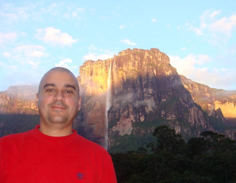

Santiago Segundo Guerrero Vivas
Perfil Profesional
AWS Certified Cloud Practitioner (04-Dic-2020)Técnico Superior Universitario en Informática, con mas de 30 años de experiencia en el área de Tecnología de la información, he tenido la oportunidad de integrar distintos equipos a lo largo de mi carrera profesional, mi perfil actual es como Devops/PAAS, para la empresa Telefónica Movistar en Argentina, he transitado desde el soporte a usuarios de PC, pasando por el área de desarrollo de aplicaciones Web, administración de servidores Unix/Linux, administración de AS400, SAP/BASIS, Obteniendo habilidades para recopilar, analizar e interpretar la realidad de la organización, en una plataforma de inventiva, creatividad y satisfacción al cliente.
Objetivo
Acceder a un puesto de trabajo para contribuir con el potencial y bagaje adquirido a lo largo de mi formación académica y experiencias profesionales previas, en el logro de las metas generales de la empresa y poder formar parte de un equipo de trabajo que me permita desarrollarme tanto profesional como personalmente.
Experiencia Laboral
Telefónica (from: 08-2022 to: current)
DevOps - PAAS
Desarrollo y soporte de despliegues via pipelines CI-CD, asi como de todo el ciclo de vida de las aplicaciones,
con solidos conocimientos de Openshift, Gitlab, ArgoCD, Helm, Tekton, Vault y otras herramientas DevOps.
Continuidad en sistema de entrenamiento para la empresa Movistar (Telefónica), basado en Linux, Oracle y CRM T3 (Weblogic), con migracion a la nube (Powercloud, Oracle Ravello). Elaboración de scripts, depuración de logs, seguimiento a los orígenes de las fallas reportadas por los usuarios, despliegue del ambiente en la nube. Administradora Guerrero, C.A. (desde: 03-2015 hasta: 01-2019)
Administrador
Control de actividades administrativas, compras y proveedores, gastos administrativos, cuentas por pagar y
trámites ante organismos estatales, pago de nómina, reclutamiento y selección de personal.
Selección, Compra, Conectividad de equipos informáticos e iluminación Lutron para automatización de luces,
configuración de redes WIFI.
Analista SAP Basis (desde: 01-2007 hasta: 03-2015)
Actualización de la plataforma a nivel de support packages, Monitoreo diario de la plataforma SAP, Ampliación de espacio en tablespace (Base de Datos), Creación y mantenimiento de scripts Unix, Revision y entonacion de avisos del Early Watch, creacion de usuarios, mantenimiento de roles y perfiles de usuarios SAP, Administracion Unix AIX y RedHat.
Administrador Unix (desde: 07-2003 hasta: 12-2006)Continuidad operacional de la plataforma Unix de Pdvsa Area Metropolitana de Caracas (230 servidores Aproximadamente), Migración de datos de cajas de almacenamiento, Estabilización, optimización y racionalización de recursos. UNIX (AIX, Solaris, HP-UX, Linux Suse redhat debian y otras distribuciones), configuracion y manejo de almacenamiento con Veritas Volume Manager, para servidores Solaris, Configuracion de respaldos a discos BCV via scripts, Virtualización de servidores con XEN y VirtualBox, Configuracion de ambiente SAP con sistema operativo RedHat, MaxDB, Sap Netweaver 7.0
Programador (desde: 01-2000 hasta: 06-2003)Análisis, diseño y programación Visualbasic v6.0 de sistemas de facturación para PDVSA GAS, Continuidad operacional de aplicaciones para la facturacion de Gas Licuado y Gas Industrial, bajo plataforma cliente - servidor, ambiente web, pericias ORACLE SQL
Educación
Tecnico Superior Universitario en Informatica Titulado: 30 de Noviembre de 1990 Instituto Universitario de Tecnologia Venezuela Técnico Superior Universitario especializado en la aplicación de procedimientos informáticos para el desarrollo y soporte de sistemas.
Idiomas
Inglés (Intermedio), Curso de Inglés-Centro Venezolano Americano (CVA) (2001 / 730 horas)
Oracle Certified Foundations Associate 1Z0-1085-24 (16-Dic-2024)
AWS Certified Cloud Practitioner (04-Dic-2020)
{kind=link}
Microsoft Azure AZ-700 (Ene 2025)
Oracle Cloud Foundations 2024 1Z0-1085-24 (Dic 2024)
Microsoft Azure AZ-104 (Jun 2024)
Terraform 2024 (May 2024)
Microsoft Azure AZ900 (May 2024)
Kubernetes Administrator (CKA) (May 2024)
Python TOTAL - Programador (Nov 2023)
NodeJS: De cero a experto (Oct 2023)
Guía Completa de Docker (Aug 2023)
ArgoCD essential (May 2023)
Helm 3 (Abr 2023)
Hashicorp vault on Kubernetes cluster (Dic 2022)
HashiCorp Vault: The Advanced (Dic 2022)
Getting Started with HashiCorp Vault 2022 (Dic 2022)
DevOps Catalog, Patterns, And Blueprints (Ago 2022)
Gestión Continua de la Calidad del Software con SonarQube (Ago 2022)
Istio Service Mesh (Jul 2022)
Helm Kubernetes Packaging Manager for developers and Devops (Jul 2022)
Certified Kubernetes Security Specialist (Oct 2021)
Certified Kubernetes Application Developer CKAD (Sep 2021)
Scrum for beginners + Master certification (Ago 2021)
OpenShift for the absolute beginner (Ago 2021)
Aws Certified Developer Associate (Jul 2021)
Jenkins from Zero to Hero become devops (Jun 2021)
Ansible Advanced (May 2021)
Ansible for absolute beginner (May 2021)
Google Cloud Associate Engineer (May 2021)
Terraform Associate 2021 (Abr 2021)
Certified Kubernetes Administrator CKA (Abr-2021)
Kubernetes for the Absolute Beginners (Feb 2021)
GitLab pipelines CICD Devops for Beginners (Feb 2021)
Aws Certified SysOps Administrator Asociate (Ene 2021)
Aws Cloud practitioner, Udemy (2020)
Docker for the Absolute beginner, Udemy (2020)
Database administrator for junior dba Oracle, Udemy (2019)
SAP Basis Academy, Caracas, Venezuela (2006)
Basic Intermediate and Advanced Unix. AIX, HP-UX, Linux, Solaris (2003-2005)
Logros Deportivos recientes
Desafio ruta 23 de la cordillera al mar 4ta Edicion 650 Kms en 4 dias Ciclismo (2023)
XXVII Paso a nado Internacional de los Rios Orinoco - Caroní (2017)